An in-editor agentic helper for HTML & Markdown artifacts
v0.1.29 — Apps Manager, Live Annotation, Claude Bridge unified, Presenter agentic, two skills
Welcome!
AI, Max Viewer is a VS Code extension that lets you view HTML and Markdown artifacts without leaving the editor.
Built specifically for AI-powered workflows.
(Note. Use emphasis when talking :-) )
1 / 16
THE PROBLEM
Context switching kills productivity
Generating an artifact with an AI agent is fast.
Iterating on it — opening a browser tab,
copying a URL, switching back to type a fix, pasting feedback — is slow.
Every artifact you ship goes through dozens of micro-loops. If each
loop costs a context switch, you stop shipping or you stop iterating.
Neither is good.
The core problem AI, Max Viewer solves is the cost of the iteration loop.
With AI agents like Claude Code, the *creation* step is fast — you ask, you
get an HTML report, a dashboard, a slide deck, a markdown plan. But the
*iteration* step is brutal: you switch to a browser, scroll to find the bit
that's wrong, copy a URL, switch back to VS Code, type "make this title
bigger", paste the URL, re-send. Multiply that by twenty per artifact. The
extension's bet is that if you can stay inside VS Code — view, annotate,
send-to-Claude, edit, refresh — you do twenty iterations in the time you
used to do five. The rest of this deck is about the surfaces that make
that loop possible.
2 / 16
SOLUTION
Four pillars: View, Drive Apps, Bridge to Claude, Present
📄
View & Annotate
Browser + Home + Recents panels. Annotation mode turns hover-and-click into structured AI prompts — extends across cross-port localhost via Live Annotation.
⚡
Drive dev apps
Apps Manager runs / stops / inspects local and remote dev apps with HTTP healthchecks and a right-click menu.
✻
Bridge to Claude
Toolbar dropdown, persistent injection, HTTP API. One unified way to talk to Claude from any artifact or app.
🎤
Present & Skills
Presenter mode with carousel + Agentic Save Notes. Two installable skills (`bridge`, `make-presentable`).
Four pillars, picked because they correspond to four different verbs the
user does inside the extension. **View** is passive — read the artifact,
navigate, find. **Drive** is active — start a Vite app, restart it, click
to open in the viewer. **Bridge** is conversational — describe a change and
have Claude execute it. **Present** is performative — turn the artifact
into something you can show in a meeting. Each pillar exists because the
previous one wasn't enough on its own. We started with View. Then we added
Bridge so views could talk back to the agent. Then Drive Apps so dev
servers could play in the same sandbox. Then Present + skills so the same
content surface could be reused across creation, review, and delivery.
The next 10 slides take each pillar apart.
3 / 16
PILLAR 1 · VIEW
Browser panel — tabs, dropdown, sidebar
Multi-tab by default — every artifact opens in its own panel, deduplicated by URL.
Toolbar with dropdown for quick navigation between configured Artifacts folders.
Sidebar TreeView with sort toggle (alpha ⇄ last-modified) and right-click context menu (Open in Viewer / External / Editor / Present).
Recents panel remembers what you opened last and lets you jump back instantly.
Multi-folder — point AIMax at any combination of Artifacts/, reports/, decks/ via aimaxViewer.browser.folders.
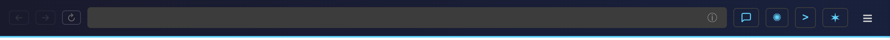
←/→/↻ · URL · ⓘ info · 💬 annotate · ✻ Bridge · >_ terminal · ★ Claude Code · ☰ menu
The Browser panel is the workhorse. It opens any HTML or Markdown file
served by the local AIMax HTTP server in a webview iframe with a custom
toolbar. The toolbar gives you back/forward, reload, an info bubble that
shows YAML frontmatter, the annotation toggle, the Claude Bridge button,
a one-click terminal, a one-click Claude Code conversation, and the
hamburger menu — all in azure on dark, all keyboard reachable. The
sidebar TreeView is the second discovery surface: every configured folder
shows up as a tree, sortable alphabetically or by modification date — the
latter being how you find "the report I generated five minutes ago".
Recents complements that with an MRU list. Multi-folder support means you
don't have to mash all your artifacts into one folder; point AIMax at three
different folders and they all coexist in the dropdown and TreeView.
4 / 16
PILLAR 1 · ANNOTATE
Annotation mode = a structured AI feedback channel
Click the chat-bubble icon in the toolbar. Hover any element to see tag, dimensions, color, font.
Click an element to attach a free-form comment. Multiple annotations get numbered badges in-page.
Send the lot in one shot via the panel header buttons:
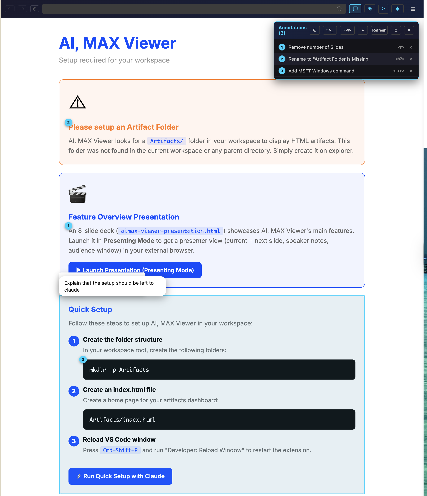
Copy ·
>Term (open terminal with claude "…") ·
>VSC (open Claude Code panel pre-filled) ·
>Run (run inline as agent, response below) ·
Refresh
Annotation mode is where the agentic loop becomes natural. Without it, you
describe a change in plain English ("the title needs to be bigger and the
colour wrong"). With it, you click the actual element, type a one-line
instruction, and the extension produces a structured prompt that includes
the CSS selector, tag, current dimensions, current colour and font. Claude
then knows exactly which DOM node you mean. The four send-buttons map to
four execution styles: Copy puts the prompt in the clipboard for ad-hoc
use. ">Term" opens a fresh terminal with `claude "..."` typed in, perfect
if you want to keep an interactive session open. ">VSC" opens a Claude
Code conversation panel pre-filled. ">Run" actually executes the agent
inline — five-minute budget, edits enabled — and renders the response in a
box right under the annotation list. The same panel is mirrored on the
Home view, so the workflow works on landing pages too.
5 / 16
PILLAR 1 · LIVE ANNOTATION
Annotate any localhost dev app
A single setting — aimaxViewer.liveInspect.enabled (on by default) — routes cross-port URLs through the AIMax reverse proxy and injects the annotation client. Same UI as the previous slide, now extended to your whole local stack.
What it enables
Annotate Vite, Streamlit, FastAPI, Next.js — anything serving on a localhost port
Same Annotation Mode UI as for static artifacts
CSP stripped on proxied HTML responses (so apps with strict CSP still get the annotation injection)
If a particular app conflicts with the proxy injection, opt it out per-host with aimaxViewer.liveInspect.skipHosts.
Live Annotation is what lets the annotation flow from the previous slide
extend to anything you run locally. Without it, annotation only worked on
files served by AIMax itself — Markdown, HTML, generated reports. With it
on, AIMax becomes a transparent reverse proxy: any cross-port localhost URL
gets routed through `127.0.0.1:/__proxy__//path`,
and on the way back, AIMax strips strict CSP headers and injects the
annotation client into the HTML response. So you open your Vite app, click
"annotate", point at a button, type "this should redirect to /pricing",
and the structured prompt is back in your hands. The opt-out is `skipHosts`
for apps whose JavaScript fights with the injection — typically apps with
their own DOM observers or hot-reload schemes. The default-on stance is
deliberate: Live Annotation is the headline feature that makes "the rest
of your stack" annotatable, not just static deliverables. Naturally pairs
with the next slide — once you can annotate any dev app, you also want to
run / stop / inspect them from the same sidebar.
6 / 16
NEWPILLAR 2 · DRIVE
Apps Manager v2 — local + remote dev apps in one place
HTTP healthcheck against healthUrl — works for apps on http://minimacs.local:5001/ and not just localhost.
Burst-then-slow refresh: 3s tick for the first 30s after activation, then your normal interval.
Right-click context menu: Open in Viewer / External / Start / Stop / Copy URL / Edit settings.json.
Cloud icon for non-local hosts; optional remote: true field protects against accidental local-process kills.
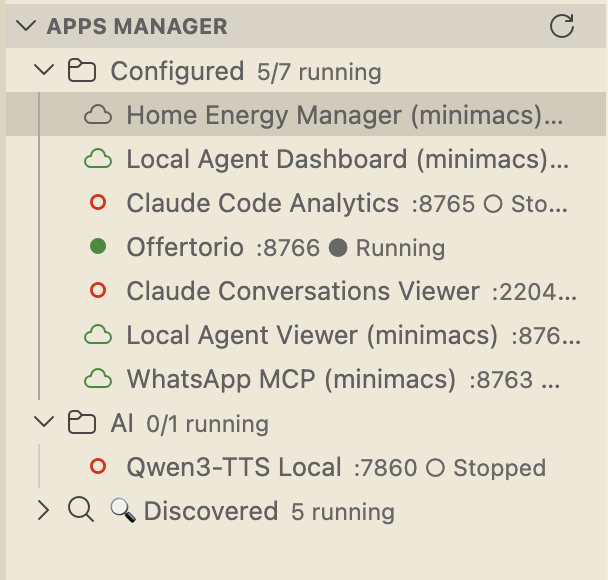
Sidebar — local + remote, with running/stopped state
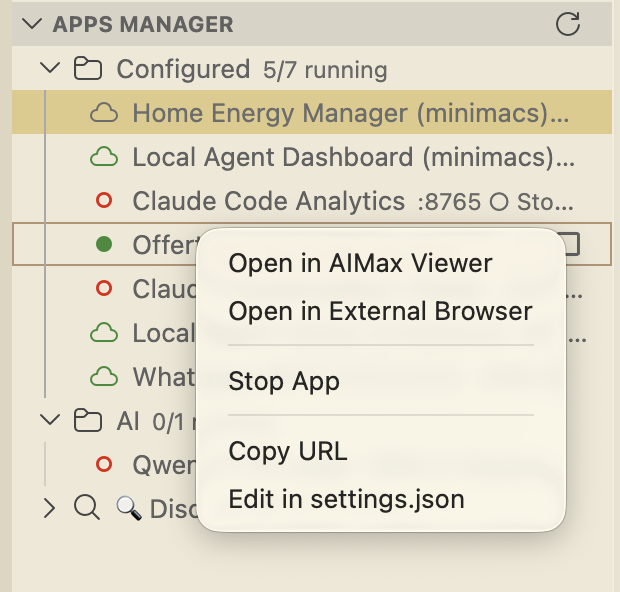
Right-click menu — Open / Stop / Copy URL / Edit
Apps Manager started simple — list local dev apps and toggle them. v2 turns
it into a real ops surface. The big change is HTTP healthcheck against the
configured `healthUrl`, which means apps on a different host (a homelab,
a remote VPS, the laptop next to yours running a model server) are
correctly detected as Running or Stopped. No more lying `lsof` on the
local machine. Burst-then-slow is a small but big-feel change: when you
just opened the panel or hit refresh, you want status RIGHT NOW. So we
tick every 3s for 30s, then settle to the user-configured interval (default
30s) so we don't burn file descriptors all session. The right-click menu
replaces an icon-only row with a discoverable set of actions per app.
Click on a stopped app now also tries to open it — if it's unreachable,
the iframe shows the connection error instead of failing silently. Combined
with the previous slide (Live Annotation), this means: spin up an app from
here, then annotate it through the proxy — both surfaces are AIMax.
7 / 16
NEWUX · DISCOVERABILITY
Right-click is everywhere — VS Code Explorer + AIMax sidebar
Folder in Explorer →Add to AIMax Viewer (asks for an alias, writes to aimaxViewer.browser.folders in workspace settings) and Open this Folder in a New Window.
File in Explorer (.html / .md) →Open in AIMax Viewer and, for HTML, Present with AIMax Viewer.
Recents in AIMax sidebar → Open in Viewer / Editor / Browser / Present, Reveal in Explorer / Finder, Remove from Recents.
Discoverability is a quiet feature. We added contextual right-click
actions wherever a user would naturally hover. Inside VS Code's
Explorer, right-clicking a folder now lets you register it as an
AIMax artifact source in one click — it prompts for an alias (default
is the folder name) and writes the entry to
`aimaxViewer.browser.folders` in `.vscode/settings.json`, so it's
committable and shared with the team. The Artifacts tree refreshes
immediately. The "Open this Folder in a New Window" entry is a tiny
but high-value shortcut to swap context to a sibling project without
losing the current workspace. On `.html` and `.md` files, the
existing "Open in AIMax Viewer" / "Present with AIMax Viewer" entries
stay where you expect them — and yes, `.md` was finally added to the
menu condition (it was a one-line `when` clause fix). Inside the
AIMax sidebar itself, the Recents panel has its own rich context
menu with seven actions covering view, edit, present, reveal and
cleanup. Combined with the Apps Manager menu from the previous
slide, the rule of thumb becomes: if you can see it, you can
right-click it. No hidden command palette dance.
8 / 16
PILLAR 3 · BRIDGE
Claude Bridge in the Browser toolbar
Always visible. Click ✻ → dropdown opens with a textarea, four actions, and an explicit Allow file edits toggle.
Copy — clipboard-only
Copy & Terminal — open new terminal with claude "…"
Copy & VS Code — open Claude Code panel pre-filled
Ask Inline — run agent in headless mode, response in-panel
Allow file edits toggle
Off (default): 60s budget, no tools, concise system prompt. Quick chat.
On: 5min budget, --dangerously-skip-permissions. Full agent, will modify files.
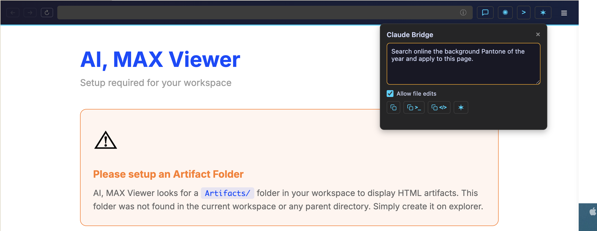
The Bridge in the toolbar is the universal entry point. It lives in the
webview chrome, not in the page DOM, so it works on any URL — local
artifact, proxied dev app, external site — without touching anyone's HTML.
The dropdown gives you four execution targets that map to your mental
model: copy for ad-hoc use, terminal for an interactive session, VS Code
for a Claude Code panel, inline for a headless agent run that returns a
response in the dropdown. The Allow file edits toggle is a hard call we
spent time on. Off, the Bridge runs Claude with `--tools ""` and a concise
system prompt — 60-second budget, no file changes possible, returns in
seconds. On, it runs `--dangerously-skip-permissions` with a 5-minute
budget — full agent, can modify files. The toggle is unchecked by default
because "asking a question" is more common than "asking for a fix", but
the path to the latter is one click away. Status text reflects the mode.
9 / 16
PILLAR 3 · BRIDGE
Add Bridge to this page — persistently (and try it now ↘)
A menu item handles the whole injection. And — because this is an AIMax-served artifact — the right column below is a live working Bridge: type something, hit a button, watch the response.
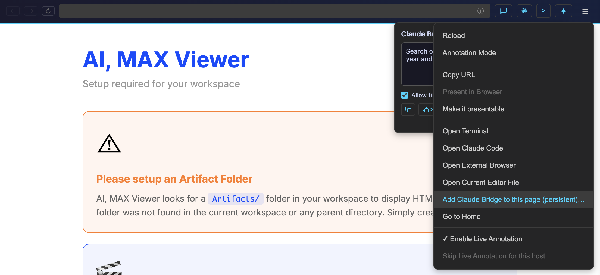
Menu ☰ — the highlighted item is the one that injects the snippet
~95 lines · same template the skill uses
Try it live (this is the real Bridge, not a mockup)
Two things on this slide. First, the menu item "Add Claude Bridge to this
page (persistent)" is the way to make the Bridge survive export — it asks
Claude Code to inject the canonical bridge snippet into the artifact's
source HTML before `
`. The "Copy code to inject" button on the left
does the same thing manually: it copies the *full* snippet to your
clipboard so you can paste it anywhere. The snippet is roughly 95 lines —
a fixed-position div containing a textarea, four colored buttons (Copy,
Copy & Terminal, Copy & VS Code, Ask Inline), a status line and a
response area, plus the JS that POSTs to `/__claude` with the prompt and
the chosen mode. It's the exact same code that the `aimax-bridge` skill
template ships, so what you copy here is what the skill installs.
Second — and more fun — the right column is a *real working* Bridge,
embedded directly into this slide. Because this deck is being served by
AIMax over HTTP, the bridge can fetch `/__claude` just like any other
artifact. So during the demo, you can type a prompt, click Inline, and
Claude actually answers. This is the proof of the slide's thesis:
artifacts and the agent run on the same fabric, and presentations can be
interactive — not just slides showing what the tool does, but the tool
itself running in the slide.
10 / 16
SKILL
aimax-bridge skill + /__claude HTTP endpoint
Underneath both the toolbar and the persistent injection, the same building blocks: an HTTP API exposed by AIMax and a skill that owns the canonical snippet.
Two install paths — skills/aimax-bridge/ (Claude Code skills dir) or plugins/aimax-bridge/ (Claude plugins dir).
Two templates:
bridge-buttons.md — floating action panel
bridge-inline.md — inline widget with prompt + response
Invoke: /aimax-bridge buttons or /aimax-bridge inline.
The Bridge's structural elegance is that all three surfaces — toolbar
dropdown, persistent injection, embedded skill widget — reuse the same
low-level primitive: the `/__claude` HTTP endpoint exposed by AIMax. That
endpoint accepts JSON with a prompt, a mode, and an `allowEdits` flag. Mode
`terminal` opens a terminal with claude "..." typed. Mode `vscode` opens
the Claude Code conversation panel pre-filled via the official URI handler.
Mode `print` runs Claude in non-interactive print mode and returns a JSON
response — chat by default (60s, no tools), full agent if `allowEdits` is
true (5min, dangerously-skip-permissions). The `aimax-bridge` skill owns
the canonical HTML snippet that talks to this endpoint; both the embedded
widget and the persistent-injection menu item ultimately install that
snippet. The skill ships in two folders — `skills/` for Claude Code's
skills directory, `plugins/` for the plugin-style directory — so users
can pick whichever install path matches their setup.
11 / 16
PILLAR 4 · PRESENT
Presenter Mode — two windows, one deck
Audience window — clean slide view, fullscreen-ready, no chrome
Presenter window — current slide, next slide, speaker notes, thumbnail carousel, timer, clock
Synchronized via BroadcastChannel — navigate one, the other follows
Editable speaker notes — click to edit, save back to source HTML (next slide!)
⌨️
Keyboard
←→ navigate · F fullscreen · T timer · Home/End first/last
Thumbnails of every slide. Click to jump. Toggle on/off, drag to resize.
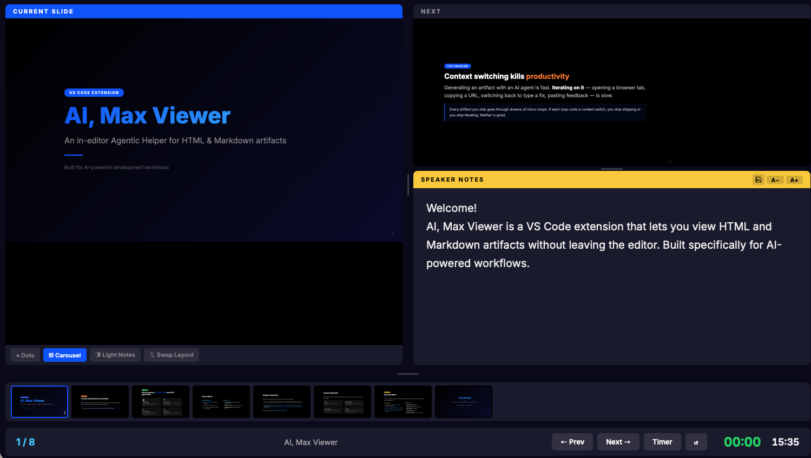
Presenter window — current + next + speaker notes + carousel + timer
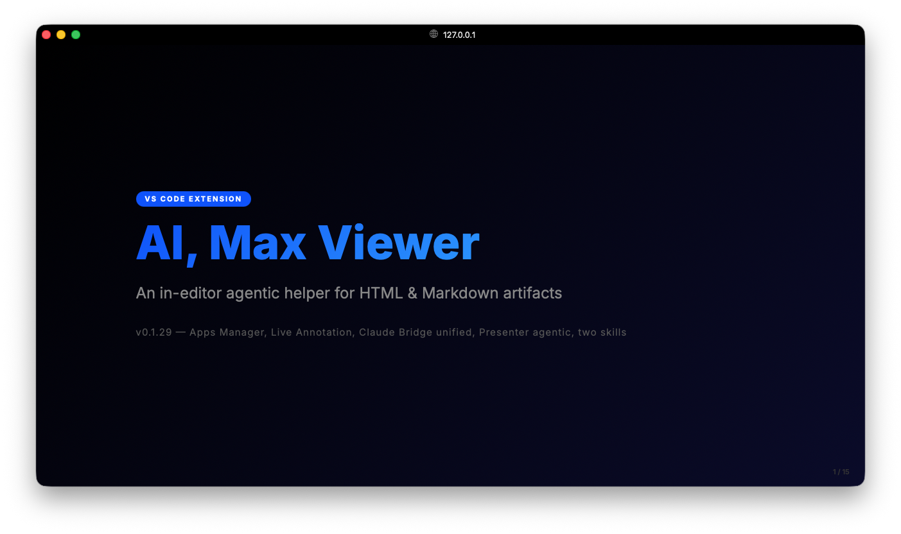
Audience window — projector view, no chrome
Presenter Mode is one of the older features that aged well. It opens the
deck in your system browser as two synchronized windows. The audience
window is dumb and clean — just the slides. The presenter window has
everything you need: the current slide, the next slide previewed, speaker
notes panel, a thumbnail carousel of all slides, a timer, a clock, and a
slide counter. The two windows talk over BroadcastChannel, so you can
advance from either one and they stay in sync. You can mark a slide as a
title-slide or end-slide with a CSS class for special styling. Speaker
notes go inside `
…
` and are hidden in
audience view but visible (and editable!) in the presenter. Keyboard
shortcuts make it usable as a real conference tool: arrow keys, F for
fullscreen, T for timer. The next slide will show two new presenter
features that pushed it from "good demo" to "actually used in production".
12 / 16
NEW
Presenter ergonomics — resize & agentic save
Carousel resize handle
Drag the bar above the carousel to grow or shrink it. Thumbnails scale proportionally — 16:9 is preserved by recomputing width from height. Min 72px, max 60% of viewport.
Why: with 30+ slides, the default tiny strip wasn't readable; with 5 slides, a tall carousel wasted space. Now you choose.
Agentic Save Notes NEW
Edit a speaker note in the presenter, click the floppy+sparkle icon. AIMax sends Claude a literal old → new edit targeted at the exact .speaker-notes block. Bottom-right banner tracks pending / done / error per slide.
Surgical contract: regex-extracts the exact block, verifies single occurrence, prohibits Read/Grep/Glob/Bash/Write to keep the agent on rails.
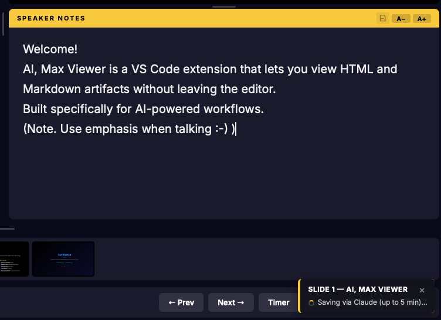
Pending — spinner banner, presenter stays usable
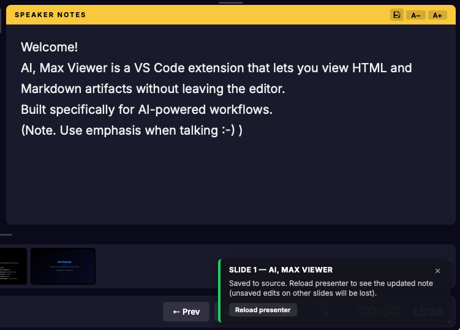
Success — Reload presenter button to refresh from disk
Try it now: open this deck in the presenter, edit any speaker note, save it. The change lands back in aimax-viewer-presentation.html on disk. Reload presenter to confirm.
Presenter Mode shipped two ergonomic upgrades in 0.1.29. The carousel
resize handle is the simple one — drag the bar above the thumbnail strip
and it grows; dragging up grows it, down shrinks. Thumbnails scale 16:9
so the proportions stay correct, mins and maxes prevent silly states. It
sounds small but the difference between a deck with 8 slides and one with
30 slides used to be jarring; now you tune it once. The bigger one is
Agentic Save Notes. Speaker notes have always been editable inline — click
the panel, type — but until now you had to copy that text back into the
source HTML by hand. The new floppy+sparkle button does it surgically: it
refetches the deck source with `cache: 'no-store'`, regex-extracts the
exact `.speaker-notes` block for the current slide, verifies it appears
exactly once, then sends Claude a literal old-to-new edit with strict
tool prohibitions. Async banners track each save independently so you can
keep navigating while edits go through.
13 / 16
SKILLNEW
aimax-make-presentable — turn anything into a deck
When you open an artifact that isn't a deck, "Present in Browser" is greyed out with a tooltip. Right under it, a new menu item Make it presentable appears.
Inputs
.md — asks which heading level to split on (H1 / H1+H2 / H1+H2+H3 / Manual)
.html with no <section> — wraps content using existing h1/h2 as boundaries
.html with sections — adapts (adds missing titles, normalizes .title-slide/.end-slide)
Decisions asked
Audience / tone (technical, sales, training…)
Length target (~5 / ~10 / ~20 slides)
Speaker notes? (yes / no / only on key slides)
Skill not installed locally? The menu item embeds a fallback prompt that fetches the skill body from GitHub raw and runs it inline that one time, then tells you how to install it permanently.
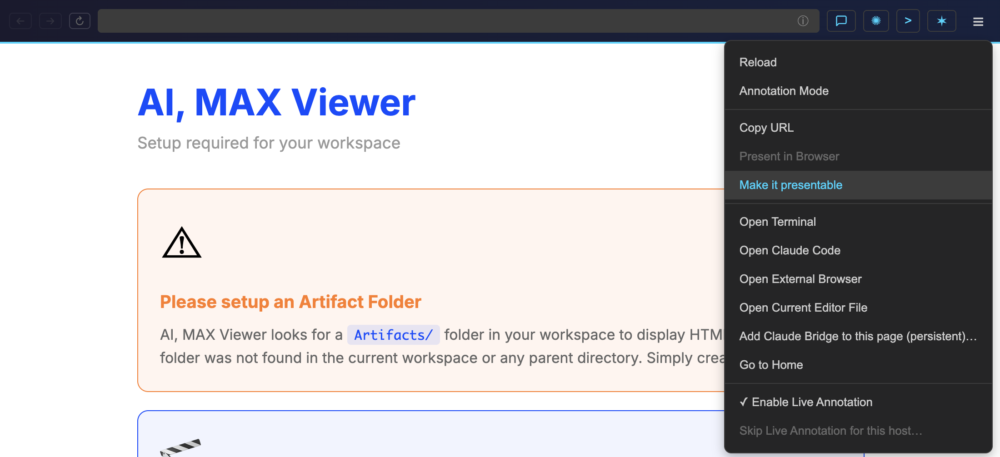
When the file isn't a deck, Present in Browser is greyed-out and Make it presentable shows up right under it.
Output: <input_basename>-deck.html next to the input.
`aimax-make-presentable` is the skill that closes the loop on the deck
contract. The Browser detects "is this a deck" by counting <section>
elements via fetch; if there are fewer than two, "Present in Browser"
grays out and "Make it presentable" appears. Click it and Claude Code
opens with the skill prompt. For a markdown input, the skill counts
headings and asks you on which level to split — "you have 3 H1 and 12 H2,
split on what?" — then produces one section per chosen heading. For an
HTML input without sections it wraps existing h1/h2 boundaries; for one
already structured, it adapts (adding missing titles, normalizing
classes). Three more questions handle audience, length, and speaker notes.
Output is `-deck.html` next to the input — predictable, no surprises.
And if the user hasn't installed the skill locally, the menu's prompt has
a fallback: WebFetch the skill from GitHub raw, run it inline, tell the
user how to install it permanently for next time. First run always works.
14 / 16
EXTENSIBILITY
Built for AI agents from day one
Every action AIMax exposes through its UI is also reachable from outside via the vscode:// URI handler. Generate an artifact, deep-link the user straight into it.
After generation, open with vscode://…/openBrowser?http://127.0.0.1:<port>/Artifacts/…
The user lands on the artifact in AIMax — annotate / present / Bridge from there
Two skills, batteries included
aimax-bridge — embed a Claude Bridge widget in any HTML
aimax-make-presentable — turn anything into a deck
Both ship in skills/ + plugins/. Falling back to GitHub raw means agents can use them without install-first friction.
AIMax was built with AI agents in mind from day one. The hamburger menu is
for humans, but the same actions are reachable from any agent through the
`vscode://` URI handler. After Claude generates an artifact and writes it
to disk, the convention is to immediately open it in AIMax with a
`vscode://aimax.aimax-viewer/openBrowser?...` URL — the user sees the
output in the viewer, not in their default external browser. Naming
convention: `Artifacts/YYYY-MM-DD_slug.html` keeps the folder
chronological. The two skills bundle the most common follow-up actions —
embedding a Bridge widget into any HTML, turning any input into a deck —
and ship in both `skills/` and `plugins/` directories so they install
cleanly into either Claude Code skill structure. The fallback-from-GitHub
pattern means even if a user hasn't installed a skill, the menu items
still work the first time. AI-friendly defaults all the way down.
15 / 16
Get Started
1 · Install the extension
Search "AIMax Viewer" in the VS Code Marketplace, or grab the latest VSIX from GitHub:
The menu items Add Bridge to this page and Make it presentable work even without local install (GitHub fallback) — but installing them once gives faster, slash-command access:
# Clone or update the repo
git clone https://github.com/maxturazzini/aimax-viewer.git
cd aimax-viewer
# Copy the two skills into Claude Code's plugin dir
cp -r plugins/aimax-bridge ~/.claude/plugins/
cp -r plugins/aimax-make-presentable ~/.claude/plugins/
# Or install as user-level skills
cp -r skills/aimax-bridge ~/.claude/skills/
cp -r skills/aimax-make-presentable ~/.claude/skills/
Then in Claude Code: /aimax-bridge, /aimax-make-presentable.
Help us write a real wiki 🙏
The extension grew way past what a README and a CHANGELOG can cover. If you've been using AIMax Viewer and want to help, we'd love volunteers for a proper wiki — how-to guides, end-to-end recipes, troubleshooting, screenshots, short screencasts.
Open an issue on
GitHub
or ping @maxturazzini if you want to take a chunk.
Made with ❤︎ by Max Turazzini · v0.1.29 · 2026
Closing call to action. Three parts. First: install the extension —
either from the VS Code Marketplace by searching "AIMax Viewer", or by
downloading the VSIX from GitHub Releases and running
`code --install-extension`. Second: install the two skills. They're
optional — both `Add Bridge to this page` and `Make it presentable` menu
items work out of the box because the prompt embeds a GitHub-raw fallback
that fetches the skill on demand. But if you install them locally once,
you also get the slash commands `/aimax-bridge` and
`/aimax-make-presentable` in any Claude Code conversation, and the menu
actions skip the network roundtrip. Two install styles depending on your
Claude Code setup: copy `plugins//` to `~/.claude/plugins/` for the
plugin model, or `skills//` to `~/.claude/skills/` for user-level
skills. Pick whichever matches your existing structure. Third: help. The
honest situation is that AIMax Viewer started as a one-person
project and grew far past what a single README and a single CHANGELOG can
document well. There's now Apps Manager, Live Annotation, Claude Bridge
with three surfaces, two skills, an HTTP API, a reverse proxy, presenter
mode with agentic save — and the docs haven't kept pace. So this is a
direct ask for community volunteers. If you've been using AIMax and want
to give back, we'd love help writing a proper wiki: how-to guides for
common workflows, end-to-end recipes (e.g. "from idea to shippable deck
in 10 minutes"), troubleshooting pages, screenshots, short screencasts.
Open an issue, tag it `wiki`, and pick a chunk. Thanks for watching.